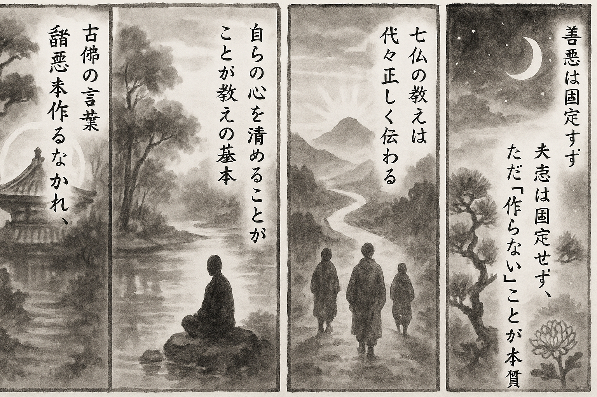

七十五巻 巻一覧
正法眼藏第31 諸惡莫作
本紹介ページの導入・語彙・深掘り・クイズは tools/regen_volume_intro_from_corpus.py が OpenAI API で生成したものです（入力は当巻の原文からの短い抜粋のみ）。内容はモデル出力のため、重要箇所は必ず原文・教本と照合してください。
出典: https://shomonji.or.jp/zazen/doc/genzou.html
原文・現代語訳の全文は 全文ページを参照してください。
この巻の紹介（導入）
古佛云、諸惡莫作、衆善奉行、自淨其意、是諸佛教（諸惡を作すこと莫れ、衆善奉行すべし、自ら其の意を淨む、是れ諸佛の教なり）。これ七佛祖宗の通戒として、前佛より後佛に正傳す、後佛は前佛に相嗣せり。
善惡は時なり、時は善惡にあらず。善惡は法なり、法は善惡にあらず。法等惡等なり、法等善等なり。しかあるに、阿耨多羅三藐三菩提を學するに、聞教し、修行し、證果するに、深なり、遠なり、妙なり。
語彙の足場
- 諸惡莫作：「諸惡莫作」とは、すべての悪を作ってはならないという教えであり、仏教において重要な戒律の一つである。これは、自己の行動を正し、他者に対しても善を行うことを促すものである。
- 衆善奉行：「衆善奉行」とは、多くの善を行うことを意味し、仏教の実践において善行を重視する姿勢を表している。これは、個人の修行だけでなく、社会全体の調和をも目指すものである。
- 自淨其意：「自淨其意」とは、自らの心を清めることを指し、内面的な浄化を通じて真の理解と行動を得ることを目的とする。これは、仏教の修行において不可欠な要素である。
- 因果：「因果」とは、原因と結果の関係を示す仏教の基本的な教えであり、行動が結果を生むことを理解することで、善悪の選択を促すものである。
- 無上菩提：「無上菩提」とは、最高の悟りや真理を指し、仏教における究極の目標である。これは、すべての存在が持つ本質的な真理を理解することを意味する。
原文（要点の抜粋）
当巻の冒頭付近からの短い抜粋です。長い引用は載せていません。 全文は全文ページを参照してください。出典はリポジトリ内 doc/正法眼蔵.txt です。原文の参照元: https://shomonji.or.jp/zazen/doc/genzou.html
古佛云、諸惡莫作、衆善奉行、自淨其意、是諸佛教（諸惡を作すこと莫れ、衆善奉行すべし、自ら其の意を淨む、是れ諸佛の教なり）。
これ七佛祖宗の通戒として、前佛より後佛に正傳す、後佛は前佛に相嗣せり。ただ七佛のみにあらず、是諸佛教なり。この道理を功夫參究すべし。いはゆる七佛の法道、かならず七佛の法道のごとし。相傳相嗣、なほ箇裡の通消息なり。すでに是諸佛教なり、百千萬佛の教行證なり。
いまいふところの諸惡者、善性惡性無記性のなかに惡性あり。その性これ無生なり。善性無記性等もまた無生なり、無漏なり、實相なりといふとも、この三性の箇裡に、許多般の法あり。諸惡は、此界の惡と他界の惡と同不同あり、先時と後時と同不同あり、天上の惡と人間の惡と同不同なり。いはんや佛道と世間と、道惡道善道無記、はるかに殊異あり。善惡は時なり、時は善惡にあらず。善惡は法なり、法は善惡にあらず。法等惡等なり、法等善等なり。
しかあるに、阿耨多羅三藐三菩提を學するに、聞教し、修行し、證果するに、深なり、遠なり、妙なり。この無上菩提を或從知識してきき、或從經卷してきく。はじめは、諸惡莫作ときこゆるなり。諸惡莫作ときこえざるは、佛正法にあらず、魔説なるべし。
しるべし、諸惡莫作ときこゆる、これ佛正法なり。この諸惡つくることなかれといふ、凡夫のはじめて造作してかくのごとくあらしむるにあらず。菩提の説となれるを聞教するに、しかのごとくきこゆるなり。しかのごとくきこゆるは、無上菩提のことばにてある道著なり。すでに菩提語なり、ゆゑに語菩提なり。無上菩提の説著となりて聞著せらるるに轉ぜられて、諸惡莫作とねがひ、諸惡莫作とおこなひもてゆく。諸惡すでにつくられずなりゆくところに、修行力たちまち現成す。この現成は、盡地盡界、盡時盡法を量として現成するなり。その量は、莫作を量とせり。
正當恁麼時の正當恁麼人は、諸惡つくりぬべきところに住し往來し、諸惡つくりぬべき緣に對し、諸惡つくる友にまじはるににたりといへども、諸惡さらにつくられざるなり。莫作の力量現成するゆゑに。諸惡みづから諸惡と道著せず、諸惡にさだまれる調度なきなり。一拈一放の道理あり。正當恁麼時、すなはち惡の人ををかさざる道理しられ、人の惡をやぶらざる道理あきらめらる。
みづからが心を擧して修行せしむ、身を擧して修行せしむるに、機先の八九成あり、腦後の莫作あり。なんぢが心身を拈來して修行し、たれの身心を拈來して修行するに、四大五蘊にて修行するちから驀地に見成するに、四大五蘊の自己を染汚せず、今日の四大五蘊までも修行せられもてゆく。如今の修行なる四大五蘊のちから、上項の四大五蘊を修行ならしむるなり。山河大地、日月星辰までも修行せしむるに、山河大地、日月星辰、かへりてわれらを修行せしむるなり。一時の眼睛にあらず、諸時の活眼なり。眼睛の活眼にてある諸時なるがゆゑに、諸佛諸祖をして修行せしむ、聞教せしむ、證果せしむ。諸佛諸祖、かつて教行證をして染汚せしむることなきがゆゑに、教行證いまだ諸佛諸祖を罣礙することなし。このゆゑに佛祖をして修行せしむるに、過現當の機先機後に廻避する諸佛諸祖なし。衆生作佛作祖の時節、ひごろ所有の佛祖を罣礙せずといへども、作佛祖する道理を、十二時中の行住坐臥に、つらつら思量すべきなり。作佛祖するに衆生をやぶらず、うばはず、うしなふにあらず。しかあれども脱落しきたれるなり。
善惡因果をして修行せしむ。いはゆる因果を動ずるにあらず、造作するにあらず。因果、あるときはわれらをして修行せしむるなり。この因果の本來面目すでに分明なる、これ莫作なり。無生なり、無常なり、不昧なり、不落なり。脱落なるがゆゑに。かくのごとく參究するに、諸惡は一條にかつて莫作なりけると現成するなり。この現成に助發せられて、諸惡莫作なりと見得徹し、坐得斷するなり。
正當恁麼のとき、初中後、諸惡莫作にて現成するに、諸惡は因緣生にあらず、ただ莫作なるのみなり。諸惡は因緣滅にあらず、ただ莫作なるのみなり。諸惡もし等なれば諸法も等なり。諸惡は因緣生としりて、この因緣のおのれと莫作なるをみざるは、あはれむべきともがらなり。佛種從緣起なれば緣從佛種起なり。
諸惡なきにあらず、莫作なるのみなり。諸惡あるにあらず、莫作なるのみなり。諸惡は空にあらず、莫作なり。諸惡は色にあらず、莫作なり。諸惡は莫作にあらず、莫作なるのみなり。たとへば、春松は無にあらず有にあらず、つくらざるなり。秋菊は有にあらず無にあらず、つくらざるなり。諸佛は有にあらず無にあらず、莫作なり。露柱燈籠、拂子拄杖等、有にあらず、無にあらず、莫作なり。自己は有にあらず無にあらず、莫作なり。恁麼の參學は、見成せる公案なり、公案の見成なり。主より功夫し、賓より功夫す。すでに恁麼なるに、つくられざりけるをつくりけるとくやしむも、のがれず、さらにこれ莫作の功夫力なり。
しかあれば、莫作にあらばつくらまじと趣向するは、あゆみをきたにして越にいたらんとまたんがごとし。諸惡莫作は、井の驢をみるのみにあらず、井の井をみるなり。驢の驢をみるなり、人の人をみるなり、山の山をみるなり。説箇の應底道理あるゆゑに、諸惡莫作なり。佛眞法身、猶若虛空、應物現形、如水中月（佛の眞法身は、猶し虛空のごとし、物に應じて形を現はすこと、水中の月の如し）なり。應物の莫作なるゆゑに、現形の莫作あり、猶若虛空、左拍右拍なり。如水中月、被水月礙（水月に礙へらる）なり。これらの莫作、さらにうたがふべからざる現成なり。
衆善奉行。この衆善は、三性のなかの善性なり。善性のなかに衆善ありといへども、さきより現成して行人をまつ衆善いまだあらず。作善の正當恁麼時、きたらざる衆善なし。萬善は無象なりといへども、作善のところに計會すること、磁鐵よりも速疾なり。そのちから、毘嵐風よりもつよきなり。大地山河、世界國土、業増上力、なほ善の計會を罣礙することあたはざるなり。
図解（4コマ・AI生成）
教義の根拠は原文・出典に従い、漫画は比喩の補助に留めてください。

深掘り（読解の手掛かり）
- 諸悪を作らないことは、仏教の教えの根幹であり、修行者にとって重要な戒律である。
- 善を行うことは、自己の成長だけでなく、他者への影響をも考慮した行動である。
- 自らの心を清めることは、真理を理解するための第一歩であり、仏教の修行において不可欠である。
- 因果の法則を理解することで、行動の結果を見据えた選択が可能になる。
確認（形成評価）
各設問の下の「採点」で正誤を表示します（ブラウザ内のみ。ログは送りません）。